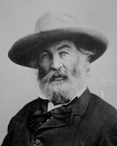

Волт Вітмен
Роки життя: 1819−1892
Читати:
«На березі морському уночі...»
Предки поета були вихідцями з Голландії. Вони прибули до Нового Світу Ш: в XVII столітті й оселилися на острові Лонг-Айленд. Батькові майбутнього поета Болтові Вітмену старшому дісталася у спадок невелика ферма, на якій він розводив коней. Мати, Луїза, виросла в тому ж Лонг-Айленді, але в більш заможній родині. В сім'ї Вітменів було дев'ятеро дітей.
Волт Вітмен молодший народився 31 травня 1819 року. Він був первістком у родині, й тому його нарекли батьковим іменем. У майбутньому син мав перейняти й батьківську справу. Але ще ніхто не знав, що Волт-молодший порушить родинні плани, стане поетом і на тридцять шостому році життя видасть книгу «Листя трави», що зробить ім'я Вітменів безсмертним.
Батько Болта був працелюбним, прагнув розбагатіти, але «вибитися в люди» йому так і не судилося. Згодом сім'я переїхала до Брукліна. Деякий час Волт- молодший відвідував школу, але у дванадцять років змушений був іти працювати, щоб допомогти родині. Його найняли в контору до юриста. Власник цієї установи виявився порядною людиною і допомагав юнаку навчатися грамотно писати, брати книги в бібліотеці. Увесь вільний час юнак віддавав читанню Нового Заповіту, творів Шекспіра, Мільтона, європейських та американських романтиків.
Наприкінці 30-х років у журналах почали з'являтися різноманітні за тематикою статті Вітмена, в яких він, зокрема, виступав проти поклоніння долару, підкреслював, що гонитва за грошима призводить до духовного спустошення. Іноді він вдавався до різких політичних висловлювань, що стали причиною звільнення його з посади редактора періодичного видання «Дейлі Ігл». Вітмен змушений був жити випадковими заробітками. Та все ж продовжував публікувати власні вірші, статті в різних періодичних виданнях.
У середині 40-х років В. Вітмен захопився музикою і театром. Відомо, що одну зі своїх рецензій, присвячену потребі розвитку оригінального американського театру, він надіслав до журналу «Бродвей Джорнал», що його видавав Е. По. Відомий новеліст не тільки опублікував рецензію, а й підтримав Вітмена під час особистої зустрічі.
За свідченням біографів, у цей час Вітмен вивчає філософію, естетику, астрономію, навіть єгипетську старовину, а також бере участь у політичному житті країни. Він любив подорожувати і в 1848 році пройшов пішки через сімнадцять штатів. Любов Вітмена до усамітнення дивувала тих, хто його знав. На думку майбутнього поета, такі мандри були необхідними для того, щоб краще пізнати себе і життя.
Взагалі, нахил Вітмена до усамітнення неодноразово коментувався біографами поета. Всі вони намагалися зрозуміти, чому серед природи поет почувався краще, ніж у людському товаристві, вбачали в цьому здатність митця до містичних переживань. Дослідники згадують також про палке кохання 29-річного поета в Новому Орлеані й жінку, яка майнула в його житті і зникла, принісши одне з найбільших зворушень, будь-коли пережитих ним. Взагалі, Волт Вітмен ніколи не був одружений. Хоча біографи називають ім'я однієї жінки, котра пристрасно кохала поета й була готова вийти за нього заміж. Це Анна Гілкрайст, удова англійського літературознавця, талановита особистість, яка при першому ж знайомстві з віршами американського митця високо поцінувала їх. Вона навіть переїхала до Америки, але Вітмен (уже тяжко хворий, розуміючи свій стан) завжди наголошував, що вони можуть бути лише друзями. Анна Гілкрайст померла раніше за нього. Про смерть Анни Вітмен дізнався з листа її старшого сина, і ця сумна звістка дуже схвилювала його.
У літературне життя Америки Вітмен увійшов пізно. Його поезія вражала своєю незвичністю й оригінальністю. 1850 року було надруковано декілька віршів поета, зокрема «Європа». В цьому творі автор висловив власне розуміння історії, революції 1848 року, оспівав свободу. Своє нове поетичне світобачення Вітмен втілив у збірці поезій «Листя трави». Вона вперше побачила світ 1855 року, але залишилася непоміченою. Вітменові повертали його першу книгу майже всі, кому він дарував її. І лише американський письменник Р. Емерсон захоплено привітав поета.
Біографи митця зазначають, що він був великим гуманістом. Із листів до рідних він постає ніжним сином і братом, який турбується про всіх членів родини. Саме в роки виходу першого видання збірки «Листя трави» тяжко захворів батько, і опікуватися сім'єю тепер мав Вітмен-молодший. Хоча любов поета до людей не замикалася в межах сім'ї. В нього були друзі, він умів спілкуватися з людьми, любив веселитися, співати й слухати пісні, читати. Серед літературних кумирів Вітмена — М. Сервантес, Р. Берне, Дж. Байрон, Й. В. Ґете, Ч. Діккенс, Ж. Санд, Ф. Купер.
У 1861 році почалася Громадянська війна, що тривала до 1865-го. Впродовж усього воєнного періоду поет, працюючи в державній військовій скарбниці, у вільний час допомагав санітарам доглядати поранених і хворих. Він неначебто розчинився в трагедії країни, намагаючись зменшити людський біль: носив пораненим їжу, під диктовку писав листи додому. Відгуком на події Громадянської війни став цикл віршів «Барабанний бій». Тяжким ударом для Вітмена було вбивство президента Лінкольна. Його пам’яті присвячено цикл поезій, серед яких слід назвати вірш «О капітане!», в котрі г ] відтворено потрясіння американського народу.
У п'ятдесят чотири роки Вітмен тяжко захворів: його розбив параліч. Значно погіршилося й матеріальне становище поета. Та прикутий до ліжка, письменник продовжує працювати, а в його творах не втрачається оптимізм і впевненість. 1871 року вийшло п'яте видання збірки «Листя трави», що принесло поетові довгоочікуване визнання американської публіки та критики.
26 березня 1892 року поет відійшов у вічність.